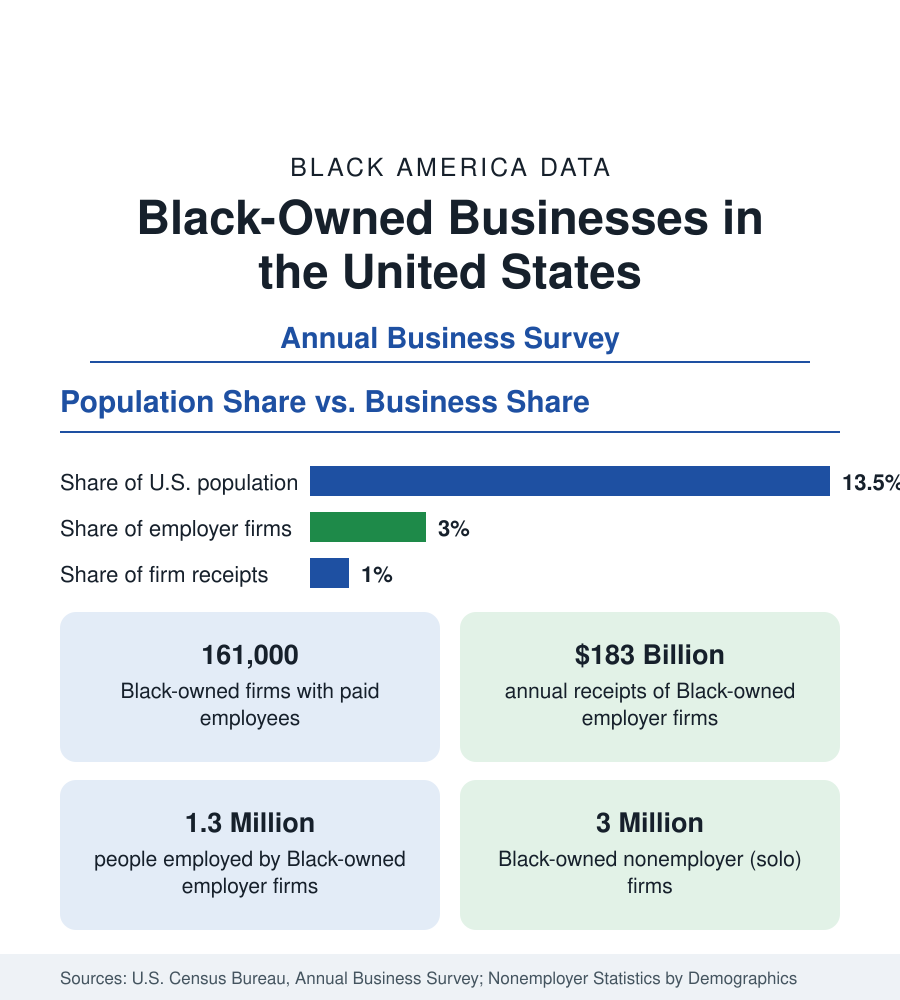

Black Business
Black-Owned Businesses: Counts, Receipts, and the Representation Gap
About 161,000 Black-owned employer firms and three million solo ventures: how the Census Bureau counts Black business ownership, where firms concentrate, and the gap between population share and business share.

Black-owned businesses are a small share of American enterprise relative to the Black share of the population, and federal business statistics measure that gap precisely. The Census Bureau's Annual Business Survey counts about 161,000 Black-owned employer firms — companies with at least one paid employee — generating roughly 183 billion dollars in annual receipts and employing about 1.3 million people. Alongside them stand roughly three million Black-owned nonemployer firms: solo operations, freelancers, and family ventures with no paid staff. This article explains how the federal government counts Black business ownership, where Black firms are concentrated, and what the data show about scale and growth.
How Black Ownership Is Counted
Federal statistics classify a firm as Black-owned when Black owners hold 51 percent or more of the stock or equity. The Annual Business Survey covers employer firms and reports their industry, receipts, employment, and payroll by the race of the owners. Nonemployer firms — the far larger universe — are counted separately in the Census Bureau's nonemployer statistics, drawn from tax records. The two universes should never be merged casually: the average employer firm reports receipts in the millions, while the typical nonemployer firm reports receipts under fifty thousand dollars. Articles in this section state which universe each figure describes.
The Representation Gap
The central fact of the data is the distance between population share and business share. Black Americans are 13.5 percent of the national population but own about 3 percent of employer firms, and those firms take in roughly 1 percent of the receipts of all employer businesses. The gap reflects differences in access to startup capital, commercial credit, and generational business inheritance documented across the survey literature: Black founders start with substantially less capital, are denied business loans at higher rates, and more often finance firms from personal savings. The data in this section's related articles — on Black wealth, lending, and firm survival — quantify each of those channels.
Where Black Firms Are Concentrated
By industry, Black-owned employer firms cluster in health care and social assistance, professional and technical services, administrative services, transportation, and food services — a mix weighted toward services and away from the capital-intensive sectors such as manufacturing, wholesale trade, and finance where average firm size is largest. By geography, Black firms concentrate where the Black population concentrates: the South holds the largest count, and metropolitan Atlanta, New York, Houston, Dallas, Chicago, and Washington hold the largest metro totals. Firm density relative to population is highest in the Washington metropolitan area and in parts of the Southeast.
Scale and Receipts
The average Black-owned employer firm is smaller than the average American firm on every measure the survey reports: fewer employees, lower payroll per worker, and lower receipts — roughly 1.1 million dollars against a national average several times higher. The distribution is highly skewed. A small number of large Black firms in technology, finance, food processing, and media account for a disproportionate share of total Black business receipts, while the median firm is a local service business with a handful of employees. Growth figures in the survey show Black firm counts and receipts rising faster than the national average in the most recent survey cycles, from a low base — the pattern the representation statistics above describe.
The Nonemployer Economy
The three million Black nonemployer firms deserve separate attention, because for most Black business owners this is the economy they inhabit. Nonemployer firms dominate in personal services, beauty and grooming, trucking and delivery, real estate, creative work, and online retail. Their combined receipts run into the tens of billions of dollars, but average receipts per firm are modest, and most operate as income supplements or first steps rather than primary livelihoods. The transition from nonemployer to employer status — the first hire — is the single largest scale jump in the data, and the point at which capital access binds hardest.
Read together, the business statistics describe an enterprise sector that is large in count, growing, and structurally under-scaled: about 161,000 employer firms and three million solo ventures, concentrated in services and in the South, producing a share of national receipts far below the Black share of the population. The articles that follow in this section examine the components of that picture — industry profiles, the largest Black firms, access to capital, contracting, franchising, and the wealth data that underlie business formation.
More in Black Business
Black Median Net Worth: The Wealth Gap in Federal Reserve Data
The Federal Reserve puts Black median family net worth at $44,900, against $285,000 for White families — about 16 cents on the dollar. The widest gap in economic data.
Black Buying Power: The $1.8 Trillion Consumer Economy
Black buying power is estimated at about $1.8 trillion — larger than the economy of most nations. What the figure measures, who produces it, and what it buys.
Black-Owned Businesses by Industry: Where the Firms Are
Health care and social assistance is the largest industry of Black business — nearly a third of employer firms. The Annual Business Survey industry profile.
Source: U.S. Census Bureau, Annual Business Survey; U.S. Census Bureau, Nonemployer Statistics by Demographics.